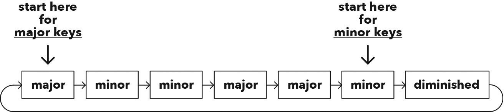

Triads in Minor Keys 小调三和弦
Hack
Major and natural minor scales are relatives of each other, which means that all major and natural minor keys always have three major triads and four minor triads (one minor triad being the diminished ‘black sheep’).
大调和自然小调是彼此的近亲，这意味着所有大调和自然小调的音阶总是包含三个大三和弦和四个小三和弦（其中一个小三和弦是减三和弦的“异类”）。
By starting on (or emphasising) the 6th triad in a major key, you get the triads in a minor key: minor, diminished, major, minor, minor, major, major.
通过在大调键中从第 6 个三和弦开始（或强调它），你就可以得到小调的三和弦：小调、减三和弦、大调、小调、小调、大调、大调。

Figure 12.1 The one sequence of seven triads for all major and natural minor keys
图 12.1 所有大调和自然小调的七个三和弦序列
A triad can be either major, minor, or diminished.
三和弦可以是大调、小调或是减小调。
This is known as its chord quality.
这被称为和弦性质。
Each of the seven triads has their own root note (i.e. the triad’s first note).
每个七和弦有其自己的根音（即和弦的第一个音符）。
However, the key itself also has a root note, which is known as the key-note (i.e. the scale’s first note)
而调本身也有一个根音，称为调音（即音阶的第一个音）。
TRIADS 三和弦
Major triad: triad consisting of a major 3rd (four semitones) and a perfect 5th (seven semitones) above its root
大三和弦：由大 3 度（四个半音）和纯 5 度（七个半音）组成的三和弦
Minor triad: triad consisting of a minor 3rd (three semitones) and a perfect 5th (seven semitones) above its root
小三和弦：由小 3 度（三个半音）和纯 5 度（七个半音）组成的三和弦
Diminished triad: special type of minor triad, consisting of a minor 3rd (three semitones) and a diminished 5th (six semitones) above its root
减三和弦：由小 3 度（三个半音）和减 5 度（六个半音）组成的特殊小三和弦
Chapter
Now, based on your understanding of relative keys and how they’re identical twins with opposite personalities (depending on what note you emphasize as the root), you can conclude that all minor keys must also have three major triads, three minor triads, and one black-sheep diminished triad.
根据相对调的原理及其相反性格的双胞胎特性（取决于你强调哪个音作为根音），你可以得出结论，所有小调也必须有三个大三和弦、三个小三和弦和一个别具一格的减三和弦。
As we discovered in chapter 5, if you’re playing a major scale you can just start on the 6th note and, voilà! You’re magically transported into the relative minor scale without changing a note.
如我们在第五章中所发现的，在演奏大调音阶时，如果你从第六个音开始，奇迹般地不改变任何音符便能进入关系小调音阶。
It’s that easy for triads too.
对于三和弦来说，同样是如此简单。
Start on the 6th triad in a major key and you’ve got the triads of a minor key.
只要从大调键中的第六个三和弦开始，就可以得到小调的三和弦。
You only ever have to remember one sequence of seven triads, and that will give you all the answers.
你只需要记住一个七和弦的序列，这就会给你所有答案。
To be honest, it won’t give you the answer to the ultimate question of what the meaning of life is, but that’s an easy one: be kind and make the world a better place by sharing your unique talents! Okay, now that the meaning of life is sorted, we can get back to triads.
当然，它不会告诉你关于生命意义的终极问题，但答案很简单：善良并利用你的独特才能让世界变得更好！好吧，现在我们已经解决了生命的意义问题，可以继续讨论三和弦了。
Below is the never-changing cyclic sequence of triads in both major and natural minor keys.
下面是大调和自然小调中永远不变的三和弦循环序列。
When you start on the 6th triad you get the sequence for natural minor keys: minor, diminished, major, minor, minor, major, major.
当你从第 6 个三和弦开始时，你会得到自然小调的序列：小调，减三和弦，大调，小调，小调，大调，大调。
In our music lingo, we refer to a triad being major, minor, or diminished as its chord quality.
在我们的音乐术语中，三和弦的大调、小调或减三和弦被称为和弦性质。
When you’re making music and you come up with an amazing chord progression, remember to write down the chord qualities of the triads too – not just their roots.
当你创作音乐并想出一个精彩的和弦进行时，记得写下三和弦的和弦性质，而不仅仅是它们的根音。
There’s a super quick and easy way of doing this, which we’ll get to in the next chapter.
有一个非常快速和简单的方法可以做到这一点，我们将在下一章中介绍。
After reading the above paragraph, you may be wondering about my use of the plural ‘roots.’
读完上面的段落后，你可能会对我使用复数“和弦根音”感到困惑。
How can a chord progression have more than one root when it’s only in one key?
一个和弦进行怎么可能在一个调式里有多个根音呢？
Every key contains seven triads, which all have their own roots (i.e. each triad’s first note).
每个调式包含七个三和弦，每个三和弦都有其根音（即每个三和弦的第一个音）。
However, the key itself also has a root (i.e. the scale’s first note).
但调式本身也有一个根音（即音阶的第一个音）。
Now you’re probably thinking that’s pretty confusing, and you’re right.
你可能觉得这很让人困惑，你没错。
So, the music gods provided us with a simple solution.
所以，音乐之神给了我们一个简单的解决办法。
Well, it was actually a dead dude, but still, great solution.
好吧，实际上是一个已经逝去的人提出的，但是这是个很好的解决方案。
As I was saying, the simple way to avoid confusion in these situations is to refer to the root note of a scale or key as the key-note.
如我所说，为了避免这些情况下的混乱，简单的方法是将调式或调的根音称为调音。
For example, in the key of A minor, A is the key-note.
例如，在 A 小调中，A 是调音。
The second triad in that key is B diminished, so B is the root of that triad, but the overall key-note throughout is always A, because we’re in the key of A minor.
该调中的第二个三和弦是 B 减三和弦，所以 B 是那个三和弦的根音，但整个调中的主音是 A，因为我们是在 A 小调中。
Sometimes our musical journeys happen backwards and we start at the destination.
有时我们的音乐旅程是倒序的，我们从终点开始。
This can occur when we’re working with someone else and they perhaps use a chord they can’t identify, or if we’re having a solo jam and stumble across a group of notes that sound cool together.
这可能发生在我们与其他人合作时，他们可能使用了一个自己无法识别的和弦，或者当我们独自即兴演奏时，偶然发现一组听起来很和谐的音符。
We then have to reverse-engineer that chord without knowing the key or anything else.
这时，我们需要在不知道调性或其他任何信息的情况下分析那个和弦。
This is done by first analysing the notes and then placing them in the standard leapfrog order (i.e. play-skip-play – see chapter 9 for more), which also reveals the root.
首先我们通过分析音符，然后将它们排列成标准的跳跃顺序（即演奏-跳过-演奏，参见第 9 章），这也会揭示出根音。
For example, the notes E C A need to be re-arranged into their original leapfrogging order: A C E.
例如，音符 E C A 需要重新排列成原始的跳跃顺序：A C E。
Any other way isn’t the original form of that chord, such as C E A, as we’d be skipping two notes between E and A.
其他任何排列方式都不是该和弦的原始形式，比如 C E A，因为这会在 E 和 A 之间跳过两个音。
Now we can analyse the intervals by counting their semitones.
现在我们可以通过计算半音来分析这些音程。
Major triads always contain the semitone pattern of four and seven above their roots, while minor triads are always three and seven above their roots, and, finally, diminished triads are always three and six above their roots. Always!
大三和弦的半音模式总是在根音之上分别是四和七个半音，小三和弦则是三个和七个半音，而减三和弦是三个和六个半音。总是这样的！